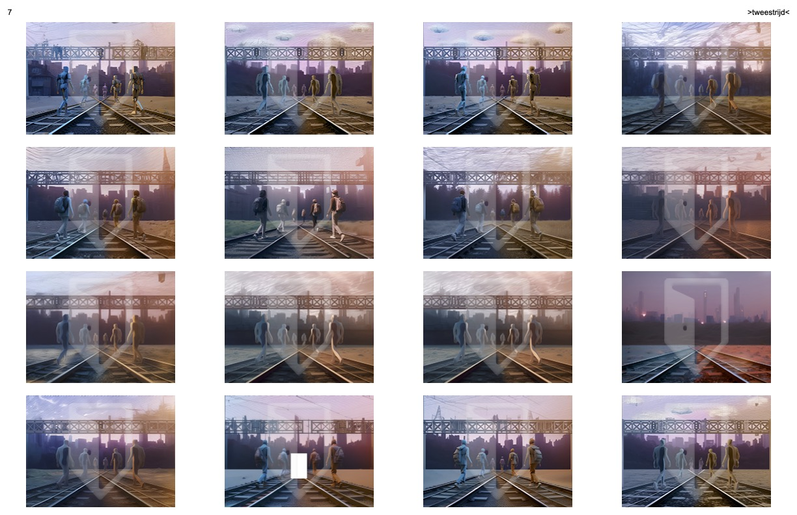
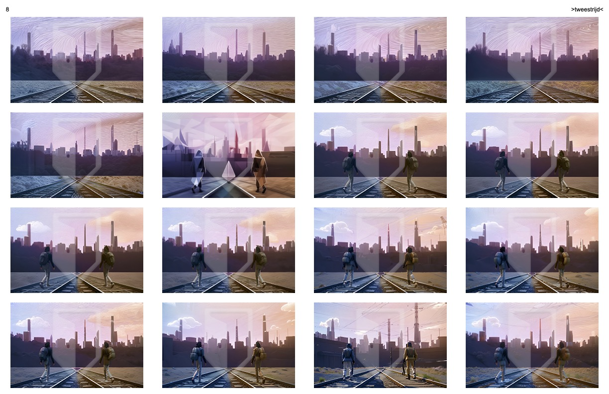
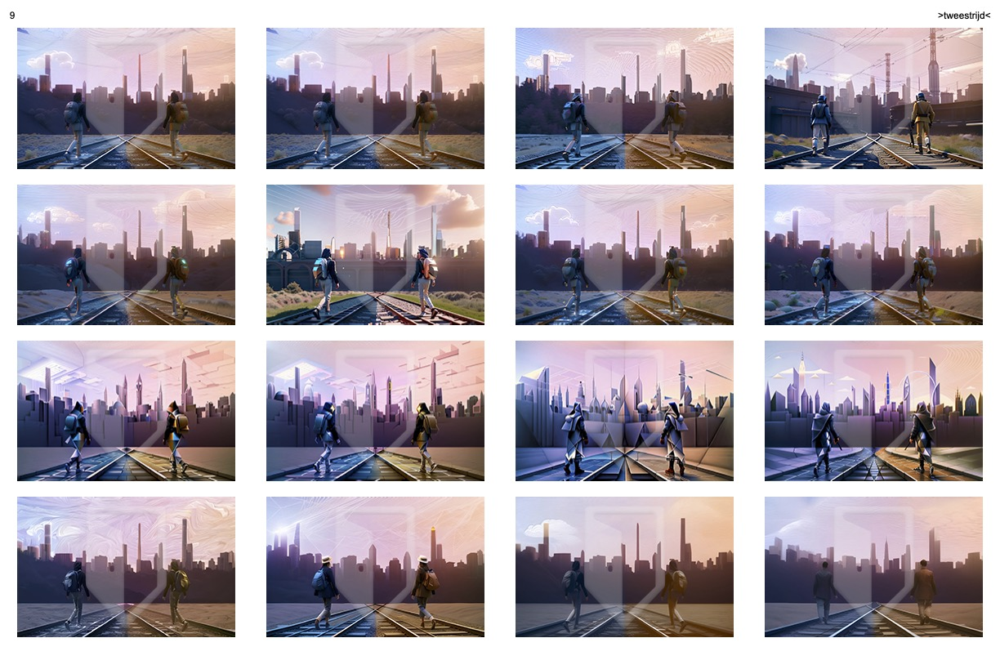
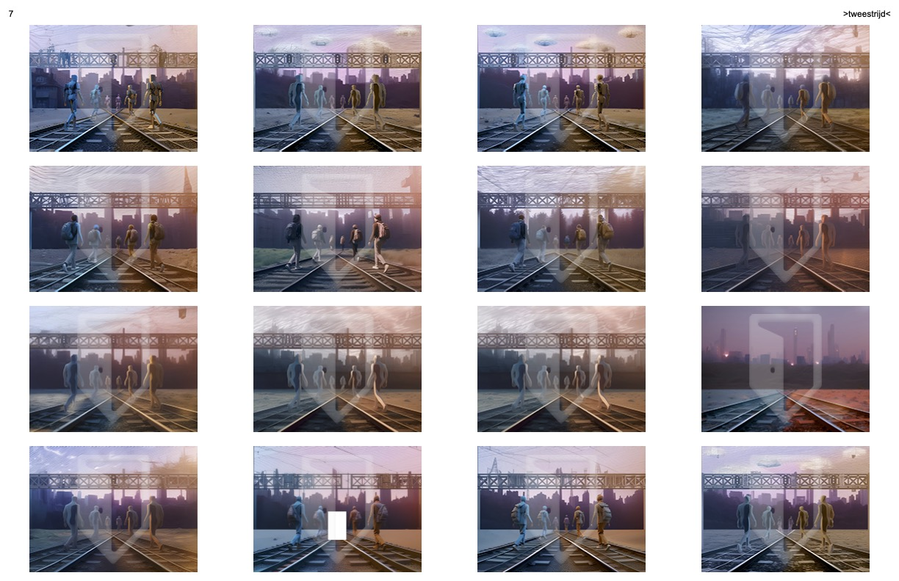
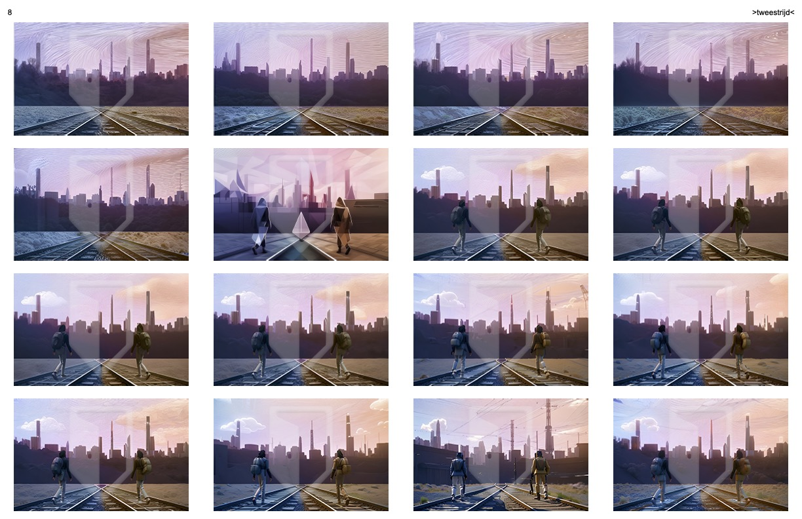
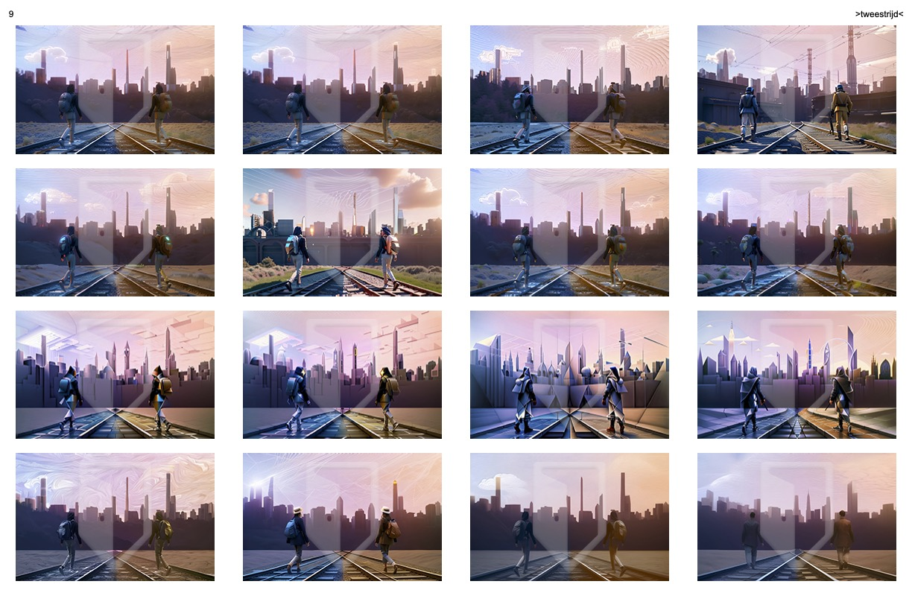

>tweestrijd<
avatar(s): li milan, nibiru fae, polexia al-twal, surya samhita
role(s): illustrator
associate(s): professor amanda marder
date(s): 10.2022-07.2023
location(s): dallas, tx, usa
platform(s): adobe photoshop, openart
abstract
designed as a transformative self-portrait, >tweestrijd< depicts the ever-changing nature of my "self" and how it evolves through interactions with "others" as a pair of hooded figures colored using complementary hues that are walking towards a city tinted a blend of their respective shades. this symbolizes the non-personal, additive exchange of qualities and perspectives that constitute the development of communities and their members. >tweestrijd< is an early success in my journey through the world of visual art and showcases the value of an iterative creative process; i conducted ideation through pencil sketches, prototyping in adobe photoshop, and interpolation using openart, receiving feedback from peers at the university of texas at dallas at every stage.
process
prototype

openart
 





feedback


ideation